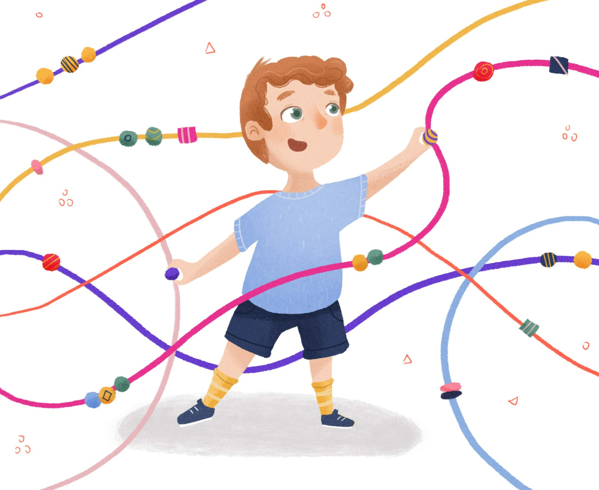

Page 1 of 9
THE M-CHAT-R™ SURVEY

The M-CHAT-R™ survey has demonstrative predictive power and is not
designed to detect all possible developmental disorders.
The Modified Checklist for Autism in Toddlers (M-CHAT; Robins, Fein,
& Barton, 1999a) is a screening measure developed to identify
young children with an elevated risk for autism spectrum disorder
(ASD) through parent report. This instrument is one of the most
commonly used screening instruments for ASD in toddlers worldwide.
Start Test
© 2009 Diana Robins, Deborah Fein & Marianne Barton